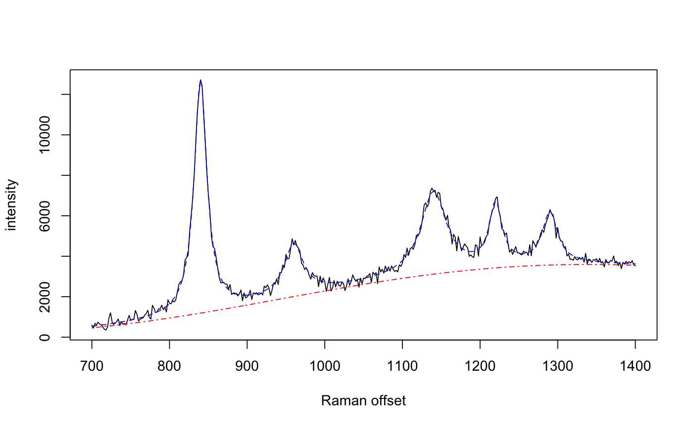

This R package implements sequential Monte Carlo (SMC) algorithms for fitting a generalised additive mixed model (GAMM) to Raman spectra. These multivariate observations are highly collinear and lend themselves to a reduced-rank representation. The GAMM separates the hyperspectral signal into three components: a sequence of Lorentzian or Gaussian peaks; a smoothly-varying baseline; and zero-mean, additive white noise. The parameters of each component of the model are estimated iteratively using SMC. The posterior distributions of the parameters given the observed spectra are represented as a population of weighted particles.
Raman spectroscopy can be used to identify molecules by the characteristic scattering of light from a laser. The pattern of peaks in a Raman spectrum corresponds to the vibrational modes of the molecule. The shift in wavenumber of the photons is proportional to the change in energy state, which is reflected in the locations of the peaks. Surface-enhanced Raman scattering (SERS) is a technique that amplifies the Raman signal using metallic substrates, such as nanoparticles. The laser can also be tuned to the resonant frequency of the molecule, which is known as surface-enhanced resonance Raman scattering (SERRS). Under controlled experimental conditions, the amplitudes of the peaks are linearly related to the concentration of the molecule, from the limit of detection (LOD) up to monolayer coverage of the nanoparticle surface.
The GAMM represents the peaks and baseline as continuous functions. The background fluorescence is modelled using a penalised cubic spline, while the peaks are an additive mixture of squared exponential (Gaussian) or Lorentzian (Cauchy) kernels: $$Y = \sum_{m=1}^M \alpha_{i,m}B_m(\nu_j) + \sum_{p=1}^P s(\nu_j | l_p, A_p, \phi_p) + \epsilon_{i,j}$$ where \(Y\) is a matrix of hyperspectral observations \(y_{i,j}\) that have been discretised at wavenumbers \(\nu_j\); \(B_m\) are the \(M\) spline basis functions with coefficients \(\alpha_{i,m}\); \(s(\nu_j | l_p, A_p, \phi_p)\) are the radial basis functions for each peak, with location \(l_p\), amplitude \(A_p\), and scale \(\phi_p\) parameters. \(\epsilon_{i,j}\) is assumed to be zero mean, additive white noise with constant variance \(\sigma^2\).
This model-based approach accounts for differences in resolution and experimental conditions, enabling comparison and alignment of heterogeneous spectra. The relationship between concentration and peak intensity can be quantified by fitting a Bayesian functional regression: $$A_p = c_i \beta_p$$ where \(c_i\) is the nanomolar (nM) concentration of the molecule in the \(i\)th spectrum, \(c_{LOD} < c_i <= c_{MLC}\). The regression model produces highest posterior density (HPD) intervals for the limit of detection of each peak. A consistent, unbiased estimate of the model evidence (also known as the marginal likelihood) is also computed. This can be used to evaluate whether Gaussian or Lorentzian peaks are a better fit to the data.
Moores, Gracie, Carson, Faulds, Graham & Girolami "Bayesian modelling and quantification of Raman spectroscopy," arXiv preprint
M. T. Moores, J. Carson & M. Girolami
Maintainer: Matt Moores <mmoores@gmail.com>
# simulate some data with known parameter values wavenumbers <- seq(700,1400,by=2) spectra <- matrix(nrow=1, ncol=length(wavenumbers)) peakLocations <- c(840, 960, 1140, 1220, 1290) peakAmplitude <- c(11500, 2500, 4000, 3000, 2500) peakScale <- c(10, 15, 20, 10, 12) signature <- weightedLorentzian(peakLocations, peakScale, peakAmplitude, wavenumbers) baseline <- 1000*cos(wavenumbers/200) + 2*wavenumbers spectra[1,] <- signature + baseline + rnorm(length(wavenumbers),0,200) plot(wavenumbers, spectra[1,], type='l', xlab="Raman offset", ylab="intensity")# fit the model using SMC lPriors <- list(scale.mu=log(11.6) - (0.4^2)/2, scale.sd=0.4, bl.smooth=10^11, bl.knots=50, beta.mu=5000, beta.sd=5000, noise.sd=200, noise.nu=4) if (FALSE) { ## takes approx. 1 minute for 100 SMC iterations with 10,000 particles result <- fitSpectraSMC(wavenumbers, spectra, peakLocations, lPriors) plot.ts(result$ess, xlab="SMC iterations", ylab="ESS") # sample 200 particles from the posterior distribution samp.idx <- sample.int(length(result$weights), 200, prob=result$weights) plot(wavenumbers, spectra[1,], type='l', xlab="Raman offset", ylab="intensity") for (pt in samp.idx) { bl.est <- result$basis %*% result$alpha[,1,pt] lines(wavenumbers, bl.est, col="#C3000009") lines(wavenumbers, bl.est + result$expFn[pt,], col="#0000C309") } }